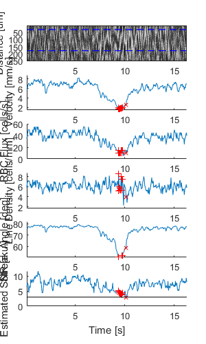
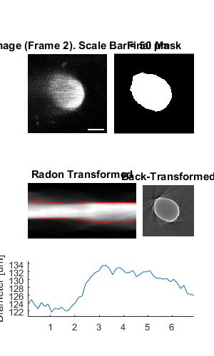
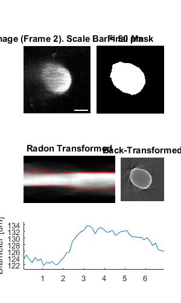

ImgGroup
Contain and analyse groups of processable objects
Contents
Usage
OBJ = ImgGroup(RAWIMG, CONFIG, PROCTYPE) OBJ = ImgGroup(..., PROCOBJ1, PROCOBJ2, ...) OBJ = ImgGroup(NAME, ...)
Arguments
- RAWIMG is the RawImg object array that will be used to create the ProcessedImg child objects in the ImgGroup object.
- CONFIG is the Config object that will be used to create the ProcessedImg child objects in the ImgGroup object.
- PROCTYPE is the type of ProcessedImg child objects that will be created in the ImgGroup object.
- PROCOBJ1, PROCOBJ2, ... are additional ProcessedImg objects that will be added to the ImgGroup object children.
- NAME is the name for this ImgGroup object.
Details
ImgGroup objects are used to contain and analyse groups of processable objects. This can be ProcessedImg objects like LineScanVel or CellScan objects, as well as nested ImgGroup objects.
See Also
Examples
The following examples require the sample images and other files, which can be downloaded manually, from the University of Zurich website (http://www.pharma.uzh.ch/en/research/functionalimaging/CHIPS.html), or automatically, by running the function utils.download_example_imgs().
Create an ImgGroup object interactively from one or more files
The following example will illustrate the process of creating a ImgGroup object interactively. Although it is possible to do so by using the constructor method followed by the add() method, it can be easier to use the static method from_files, as illustrated below.
% Construct an ImgGroup using the static method from_files
ig01 = ImgGroup.from_files()
Since no type of ProcessedImg has been specified, the first stage is to specify the type of ProcessedImg to create. Press seven followed by enter to choose a LineScanVel in this case.
----- What type of ProcessableImage would you like to create? -----
>> 1) ArbLineScan
2) CellScan
3) CompositeImg
4) FrameScan
5) ImgGroup
6) LineScanDiam
7) LineScanVel
8) MultiChImg
9) XSectScanSelect a class: 7
Since we are going to choose RawImg files, we must also select the type of RawImg to create. Press three and then enter to select the SCIM_Tif.
----- What type of RawImg would you like to load? -----
>> 1) BioFormats
2) RawImgDummy
3) SCIM_TifSelect a format: 3
Then, use the interactive dialogue box to select the raw image files framescan_scim.tif and linescanvel_scim.tif (press shift or control/command to select multiple images), which should be located in the subfolder tests>res, within the CHIPS root directory. Although these two images are not really the same type, they will illustrate how to create an ImgGroup object.

Use the interactive dialogue box to select the dummy calibration (calibration_dummy.mat):

The next stage is to define the 'meaning' of the image channels. For this example we will specify the first channel as blood plasma. Press one and enter to complete the selection.
----- What is shown on channel 1? -----
>> 0) <blank>
1) blood_plasma
2) blood_rbcs
3) Ca_Cyto_Astro
4) Ca_Memb_Astro
5) Ca_Neuron
6) cellular_signal
7) FRET_ratioAnswer: 1
The next stage is to specify which velocity calculation algorithm should be used. In this case we will choose the Radon transform method. Press two and then enter to complete the selection.
----- What type of velocity calculation would you like to use? -----
>> 1) CalcVelocityLSPIV
2) CalcVelocityRadonSelect a format: 2
The final stage is to select the left and right limits of the images to use for velocity calculations. We will not show images here, but the procedure is the same as shown in the LineScanVel examples.
We have now created a ImgGroup object interactively.
ig01 =
ImgGroup with properties:
children: {[1x1 LineScanVel] [1x1 LineScanVel]}
nChildren: 2
state: 'unprocessed'
name: []The process is differerent from creating a LineScanVel object array because the ImgGroup constructor prompts us to choose the left and right limits for velocity calculation for every image, whereas the LineScanVel constructor assumes we want the same limits for every RawImg.
Prepare some RawImg objects for use in these examples
% Prepare a RawImg array for use in these examples fnRawImgArray = fullfile(utils.CHIPS_rootdir, 'tests', 'res', ... 'linescanvel_scim.tif'); channelsArray = struct('blood_plasma', 1); fnCalibration = fullfile(utils.CHIPS_rootdir, 'tests', 'res', ... 'calibration_dummy.mat'); calibration = CalibrationPixelSize.load(fnCalibration); rawImgArray(1:2) = SCIM_Tif(fnRawImgArray, channelsArray, calibration); rawImgArray = copy(rawImgArray)
Opening linescanvel_scim.tif: 100% [===============================]
rawImgArray =
1x3 SCIM_Tif array with properties:
filename
isDenoised
isMotionCorrected
metadata_original
name
rawdata
t0
metadata
Prepare some ProcessedImg objects for use in these examples
% Prepare a LineScanVel array for use in these examples nameLSV = 'test LSV'; configRadon = ConfigVelocityRadon('windowTime', 200); isDarkStreaks = []; colsToUse = [15 90]; lsvArray = LineScanVel(nameLSV, rawImgArray, configRadon, ... isDarkStreaks, colsToUse)
lsvArray =
1x3 LineScanVel array with properties:
plotList
calcVelocity
colsToUseVel
isDarkStreaks
state
name
rawImg
Create an ImgGroup object without any interaction
% Create an ImgGroup object from ProcessedImg objects without any interaction nameIG02 = 'test IG 02'; ig02 = ImgGroup(nameIG02, lsvArray)
ig02 =
ImgGroup with properties:
children: {[1x3 LineScanVel]}
nChildren: 1
state: 'unprocessed'
name: 'test IG 02'
Add RawImg objects to an existing ImgGroup object with a custom config
% Prepare an extra RawImg for use in this example fnRawImgXSect = fullfile(utils.CHIPS_rootdir, 'tests', 'res', ... 'xsectscan_scim.tif'); channelsXSect = struct('blood_plasma', 2); rawImgXSect = SCIM_Tif(fnRawImgXSect, channelsXSect, calibration); % Add to an existing ImgGroup object with a custom config procImgType = 'XSectScan'; configTiRS = ConfigDiameterTiRS('thresholdFWHM', 0.3, ... 'thresholdInv', 0.25); ig02.add(rawImgXSect, configTiRS, procImgType); ig02
Opening xsectscan_scim.tif: 100% [=================================]
ig02 =
ImgGroup with properties:
children: {[1x3 LineScanVel] [1x1 XSectScan]}
nChildren: 2
state: 'unprocessed'
name: 'test IG 02'
Process an ImgGroup object (in parallel)
% Process an ImgGroup object (in parallel). % This code requires the Parallel Computing Toolbox to run in parallel useParallel = true; ig02 = ig02.process(useParallel)
Processing children: 100% [========================================]
ig02 =
ImgGroup with properties:
children: {[1x3 LineScanVel] [1x1 XSectScan]}
nChildren: 2
state: 'processed'
name: 'test IG 02'
Plot a figure showing the output from all children
% Plot a figure showing the output from all children. % Note: the figures are deliberately displayed smaller here hFig = ig02.plot(); set(hFig, 'Position', [50, 50, 300, 500]);
 
 
Output the data from all children
% Output the data. This requires write access to the working directory fnCSV02 = ig02.output_data('ig02', 'overwrite', true); fID02 = fopen(fnCSV02{end}{1}, 'r'); fileContents02 = textscan(fID02, '%s'); fileContents02{1}{1:5} fclose(fID02);
ans = time,diameter,areaPixels,maskSTD,mask ans = 0.06966,123.58714,2999,FALSE,FALSE ans = 0.20898,124.89888,3063,FALSE,FALSE ans = 0.34830,123.64894,3002,FALSE,FALSE ans = 0.48762,122.57335,2950,FALSE,FALSE